arXiv 2409.14393 · cs.AI · v1 2024 年 9 月 22 日 · ACM TOG 43(6) · SIGGRAPH Asia 2024 · 中文精读
MaskedMimic: Unified Physics-Based Character Control Through Masked Motion Inpainting
作者 Chen Tessler、Yunrong Guo、Ofir Nabati、Gal Chechik、Xue Bin Peng，来自 NVIDIA（Chechik 同时在 Bar-Ilan 大学，Peng 同时在 Simon Fraser 大学）。
关于这份精读。我读的是 arXiv v1（2024 年 9 月 22 日，也是目前唯一的版本）。arXiv 摘要页登记的许可是 CC BY-NC-SA 4.0（署名、非商业、相同方式共享）。PDF 是 TOG 的排版，第一页页脚印着 ACM 的版权声明，和 arXiv 登记的许可字面上不完全一致，见读者注 1；我按 arXiv 登记的许可处理。
图 1 到图 10 从 arXiv PDF 裁切，只做了裁切和缩放（转成 webp），没有改内容，署名 Tessler et al.。按相同方式共享的条款，本页的文字和裁切图同样按 CC BY-NC-SA 4.0 提供，仅限非商业使用。图下的文字是我写的。内容按原文顺序覆盖正文十节和附录 A、B，小节编号和原文一致，用自己的话写，不是逐字翻译；公式按原文编号，表格数字照录。附录 B.2 的代码清单只用文字转述，不照抄。
代码。官方代码在 NVlabs/ProtoMotions。这个仓库 2025 年 5 月重写了历史（现在最早的提交是 2025-05-09 的 “Initial commit.”），论文时的版本已经不在官方仓库里。我读的是作者 2024-09-25 的 “V1 - Public release” 提交 bacad32，通过 2024-09-26 建立、之后没再更新的一个分叉读到；它的许可是 NVIDIA License（第 3.3 条：只许非商业，即研究或评估用途）。两天后的修正提交 6ac71e1 也看了。现在的 main 是 b43fc6f（2026-11-03），许可改成了 Apache 2.0，代码结构完全不同，默认配置也不同，只在个别地方对照。全部只读，没有运行。下文说“V1 代码”都指 bacad32。
标成“读者注”的框是我核对的内容，不属于论文，页尾有汇总。
arXiv 摘要页的许可链接指向 CC BY-NC-SA 4.0，这是我这里转载的依据。但 PDF 第 1 页左下角是 ACM 的标准声明：允许个人或课堂使用、不得营利，“其他用途请联系作者”，并写 “© 2024 Copyright held by the owner/author(s)”，以及 TOG 的 DOI 10.1145/3687951。版权归作者本人，作者又在 arXiv 选了 CC BY-NC-SA，两者都排除了商业用途，但 ACM 声明比 CC BY-NC-SA 更窄（没有允许改编和再分发）。我按 arXiv 登记的许可处理，把这一点列出来，读者要再转载时请自己判断。
物理仿真角色的控制器通常一个任务一个：走地形一个，坐椅子一个，VR 跟踪一个，每个都要专门设计奖励再训练。也有先学一个潜空间技能库、再为每个新任务训一个高层策略的做法，但潜码很抽象，用户没法直接指挥。
MaskedMimic 换了个问法：给一段动作的一部分描述——几个关节在某些时刻的位置、一句话、一个物体——让控制器补出整个身体的、物理上可行的动作。这叫动作补全（motion inpainting）。训练分两步：先用强化学习训一个看得见完整目标的全身跟踪器 \(\pi^{\rm FC}\)；再把它蒸馏进一个只看遮挡后目标的条件 VAE \(\pi^{\rm PC}\)，遮挡是从动捕数据里随机、按时间结构化地抠出来的。训练完不再训练任何任务，用户用一个小状态机在不同时刻给不同的约束（“目标工程”），就能完成路径跟随、转向、伸手、坐椅子、文本控制。
读完我认为最值得记住的三点：遮挡必须在时间上“粘”住，去掉这一条坐椅子成功率直接变成 0%（表 6）；编码器写成先验的残差，KL 里先验均值会消掉，先验均值只能靠动作损失学（读者注 7）；和 PULSE、PHC+ 的横向比较可能用的不是同一个测试集——MaskedMimic 自己的测试成功率都能写成 k/1776，不能写成 k/138（读者注 13）。
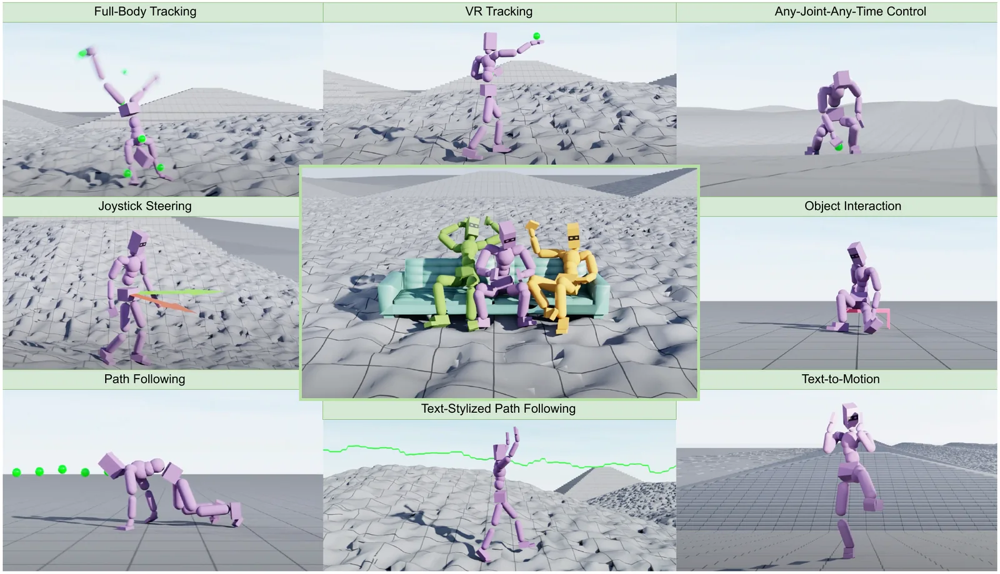
我读了 SuperMimic 的全文。它提到 MaskedMimic 两处（参考文献 [9]）：§2 说 MaskedMimic 通过动作补全支持部分身体和多模态目标；表 1 把它列成“模仿：A2C；潜变量和下游：DAgger（合并单元格，即联合训练）；任务信号：蒸馏；真机：✗”。SuperMimic 没有用 MaskedMimic 的遮挡、VAE 或目标工程；它的“多种目标接口”（附录 B）是和跟踪器联合训练的目标编码器，思路上接近 SONIC，不是补全。所以从原文看，SuperMimic 把 MaskedMimic 当作“从跟踪器出发得到通用目标接口”这一类方法的一个代表，没有拿它的技术。
| SuperMimic 表 1 | 表里写的 | 原文和代码 | 判断 |
|---|---|---|---|
| 模仿 | A2C | 正文 §5.1 只说“强化学习 [Mnih 2016; Peng 2018]”；附录 B.1 明写 A2C，并说 A2C 更稳、整轮梯度累积以保证在策略。V1 代码默认是 PPO（6 遍 × 8 小批） | 和论文附录一致；和发布代码默认值不一致（读者注 2） |
| 潜变量 + 下游（合并） | DAgger | 编码器、先验、解码器在同一个蒸馏阶段一起训；学生自己采数据，老师标注（§6.2、V1 only_bc、collect_data_with_expert False） | 准确。“下游”在这里就是先验这个目标接口，没有单独的下游训练 |
| 任务信号 | 蒸馏 | 没有任何任务奖励；任务靠推理时的目标工程（§8.2） | 准确；更严格地说任务根本不训练（读者注 3） |
| 真机 | ✗ | 只有 SMPL 仿真人形（附录 A） | 准确 |
附录 B.1 原话的意思是：每回合交互 32 步后“用 A2C [Mnih et al. 2016] 训练”，γ = 0.99，GAE τ = 0.95，演员学习率 2×10⁻⁵、评论家 1×10⁻⁴；训练全身跟踪器时每卡小批 16,384，“A2C 更稳定，最终表现更好；为保证在策略，在整轮数据上做梯度累积”。注意这段第一句的主语写的是“MaskedMimic”，但后文说 MaskedMimic 用的是监督的行为克隆，所以 A2C 应当只指 \(\pi^{\rm FC}\)。另外 [Mnih 2016] 是 A3C 那篇（异步方法），A2C 是它的同步版本，这个引用是通行做法。
V1 代码 config/algo/ppo.yaml 的默认值是 e_clip 0.2、num_mini_epochs 6、batch_size 16384、gradient_accumulation_steps 1，full_body_tracker 实验没有覆盖这些值，所以按发布的配置跑出来的是普通 PPO：每卡每轮 4096 × 32 = 131,072 个样本，切成 8 个小批，走 6 × 8 = 48 步。agents/ppo.py:352-380 里，gradient_accumulation_steps ≤ 0 时会把整轮的梯度累积成一步；再把 num_mini_epochs 设 1，每轮就只有一步，新旧策略相同，比值恒为 1，裁剪不起作用，PPO 的目标退化成带 GAE 的优势演员-评论家，也就是论文说的 A2C。所以 SuperMimic 的“A2C”忠实于论文原文；如果拿发布代码复现，需要自己改这两个值。第 5 幕用一个玩具当场算了两种用法的差别。
“DAgger”：§3.2 和 §6.2 都写明用 DAgger [Ross 2011]，学生执行、老师重新标注；V1 配置 mimic_vae_dagger.yaml 里 only_bc: True（只有行为克隆损失，没有 RL 项）、collect_data_with_expert: False（全由学生采数据），pre_env_step 里学生执行自己的均值动作，和 §6.3“采数据时两边都用确定性动作”一致。SuperMimic 表注说 BC 指在固定专家数据上离线克隆，与 DAgger 相对；MaskedMimic 属于后者，标对了。
“联合”：表注说合并单元格表示联合训练的阶段。MaskedMimic 里编码器、解码器、先验同时训练，先验就是下游的目标接口，所以合并是对的。但要注意这和 SuperMimic、SONIC 那种“三段全联合”不同：MaskedMimic 的模仿阶段是先训好再冻结的，表里 A2C 单独一格也表达了这一点。
“蒸馏”：表注说任务信号是“训练下游接口的东西”。MaskedMimic 的先验确实只由跟踪信号（老师动作和 KL）训练，没有任务奖励。更严格地说，表 5、表 6 的任务在推理时用状态机组合约束完成，没有任何任务训练，这一点表里看不出来。
问题。论文举的例子是“爬上山坡到城堡，向守卫挥手，进门，走到王座厅，坐上王座”。这需要地形行走、文本驱动动作、物体交互几种能力。以前的物理方法要么每个任务训一个控制器，要么先把原子动作编码进可复用的潜空间、再为新任务训高层控制器。两条路都不够通用：每个新任务都要漫长的训练，还常常依赖精心手写的奖励，调不好就出现意料外的行为。
做法。目标是一个可以跨任务重复使用的统一控制模型，不需要任务专门的训练和奖励工程。数据就是现成的动捕数据集里的多模态信息：运动学轨迹、文本描述、场景。模型在随机遮挡的动作序列上训练，看到遮挡后的描述，预测能复现原始（未遮挡）完整动作的动作指令。
训练好后，这种补全方式提供了直观的接口。论文把用法称为“目标工程”（goal-engineering），类比语言模型的提示词工程：用户给不同的约束，引导控制器完成任务。好处有三：在遮挡序列上训练能泛化到新的目标组合；直观的部分约束代替复杂易错的奖励函数（图 2）；单一模型有正迁移，比如 VR 跟踪比专门方法好，同时还能在起伏地形和新物体上工作。
两项贡献。
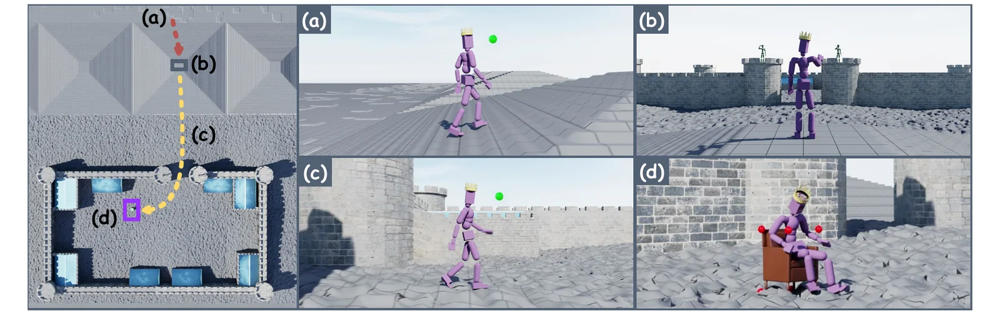
物理角色动画。早期手工设计任务专用控制器，效果可以很好，但每个任务都要长时间工程，扩展不到通用控制。后来用学习做出了场景相关的行为，比如地形行走（PACER）和坐到物体上（InterPhys），但仍要挑选合适的动作片段并精细设计奖励。和运动学动画比，物理方法天然处理物体交互和起伏地形。
人-物交互。运动学的 HOI 方法在场景穿越和交互上有进展，但常有穿模、物体漂浮。物理方法（PhysHOI、InterPhys、UniHSI）用物理引擎保证合理。MaskedMimic 把交互也纳入统一控制器，并且能处理没见过的组合，比如把家具放到起伏地形上。
文本到动作。BABEL、HumanML3D 这类带文本标注的大数据集催生了文本条件模型，早期是运动学的（ACTOR、MDM），提示词要仔细调，动作还会漂浮和滑步。PACER+ 用运动学扩散模型生成上半身、物理控制器跟路径；PADL 和 SuperPADL 直接训练文本条件的物理控制器。MaskedMimic 用一个统一的物理控制器同时接受文本和运动学约束，不需要单独的文本到动作模型，于是可以用文本给动作加风格。
潜变量生成模型。用大动作数据集把潜码映射到不同行为：ASE、CALM、CASE 用对抗目标，ControlVAE、PhysicsVAE、PULSE、NCP 用动作跟踪。它们去掉了任务专用的数据挑选，但潜码抽象，要解新任务还得再训一个层级控制器。MaskedMimic 用 VAE 加跟踪目标，但接口是从数据本身抠出来的多模态部分约束，一个模型就能覆盖地形行走、VR 全身生成、插帧、物体交互、全身跟踪等。
动作补全。从部分关节约束生成全身动作就叫补全，插帧和 VR 跟踪都是它的应用。运动学补全有自回归、变分推断、扩散（如 OmniControl）等方法。物理方法里也有稀疏跟踪，但都针对固定的稀疏模式，比如 QuestEnvSim 只处理 VR 的固定关节。MaskedMimic 支持任意组合的模态可见或不可见，从无条件生成到“起伏地形上的 VR 控制”都能做；物理建模又让模式之间的切换和接触保持合理。
框架分两段：先用强化学习在大动作库上训练跟踪控制器，再用行为克隆把它蒸馏成多模态控制器。
第一段用目标条件强化学习（GCRL）。每步智能体观测状态 \(s_t\) 和未来目标 \(g_t\)，按策略采样动作 \(a_t\sim\pi(a_t|s_t,g_t)\)，环境按动力学 \(p(s_{t+1}|s_t,a_t)\) 转移，给出奖励 \(r_t=r(s_t,a_t,s_{t+1},g_t)\)。目标是最大化折扣回报：
其中 \(p(\tau|\pi)=p(s_0)\prod_{t=0}^{T-1}p(s_{t+1}|s_t,a_t)\pi(a_t|s_t,g_t)\) 是轨迹 \(\tau=(s_0,a_0,r_0,\dots,s_T)\) 的似然，\(\gamma\in[0,1)\) 决定有效视野。
第二段用行为克隆（BC）把 RL 训出的老师 \(\pi^*\) 蒸馏成能接受多模态输入的学生 \(\pi\)，具体用 DAgger：执行学生策略收集轨迹，用老师的动作重新标注：
\(p(s,g|\pi)\) 是学生策略下见到的状态和目标的分布。这种“主动”的行为克隆缓解了纯监督蒸馏的漂移。
目标是一个可扩展的系统，从大规模多模态数据学丰富的行为，支持多种控制模态。两段：
第 1 段：全身约束控制器。物理跟踪就是生成控制量（电机指令），让仿真角色的动作 \(\{q_t\}\) 接近运动学目标 \(\{\hat q_t\}\)。姿态用冗余表示 \(q_t=(p_t,\theta_t)\)：\(J\) 个关节的 3D 位置 \(p_t=(p^0_t,\dots,p^J_t)\) 和旋转 \(\theta_t=(\theta^0_t,\dots,\theta^J_t)\)。跟踪控制器通常以未来目标姿态为条件，这里称为全约束目标 \(g^{\rm full}_t\)，因为它完整描述了要模仿的动作。
第 2 段：部分约束控制器。扩展到只观测部分目标，比如 VR 只有头和双手的传感器，或者只给一个物体（椅子）让角色生成交互动作。部分目标记作 \(g^{\rm partial}_t\)。训练方法很简单：用随机遮挡函数 \(\mathcal M\) 从目标动作抠出遮挡后的观测，\(g^{\rm partial}_t=\mathcal M(g^{\rm full}_t)\)，让控制器从中重建完整动作。
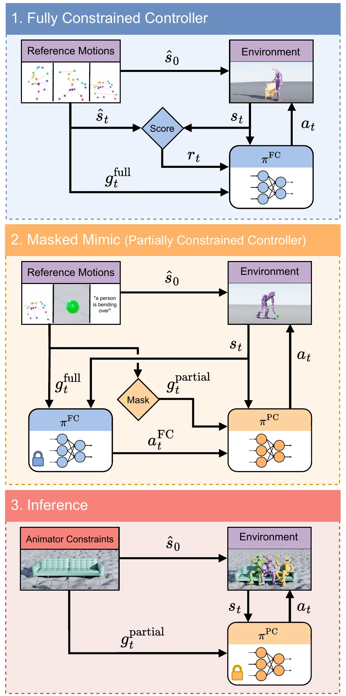
第一段用强化学习训练全身跟踪器 \(\pi^{\rm FC}\)，能在起伏环境里模仿大动作库，需要时和物体交互。因为数据只有运动学片段，\(\pi^{\rm FC}\) 的主要作用是估计出驱动仿真角色所需的动作（电机指令），为第二段打好基础。
\(\pi^{\rm FC}\) 端到端训练，输入是全身的目标动作序列和周围环境（地形、物体的高度图），用跟踪奖励和强化学习优化。
角色观测。当前状态包括 3D 身体姿态和速度，都换到角色局部坐标系：
\(\ominus\) 是两个旋转的四元数差。除了当前状态，策略还看参考动作接下来的 \(K\) 个目标姿态 \(g^{\rm FC}_t=[\hat f_{t+1},\dots,\hat f_{t+K}]\)。每个关节的特征同时相对当前根部、相对当前对应关节表示：
每个目标姿态再加上从现在到它的时间 \(\tau_{t+k}\)：\(\hat f_{t+k}=\{\hat f^1_{t+k},\dots,\hat f^J_{t+k},\tau_{t+k}\}\)。
论文没有给 \(\pi^{\rm FC}\) 看几个未来姿态；附录 B.2 的 \(K=11\) 说的是 MaskedMimic。V1 代码 opt/mimic/transformer/target_pose_with_time_obs.yaml 里 FC 的 num_future_steps 是 15，每关节 18 维（num_obs_per_joint 18，按式 (4) 是两个 6D 旋转差加两个 3D 位置差 = 18）再加 1 维时间；高度图是 16 × 16 = 256 个点（terrain/flat.yaml）。仿真 fps 60 × substeps 2 = 120 Hz，control_freq_inv 2，策略 30 Hz，和 §7 一致。
场景观测。为了在起伏地形上模仿，把角色姿态相对根部（骨盆）正下方的地形高度归一。训练时给控制器一张周围环境的高度图，随根部朝向旋转，分辨率固定，记录附近地形和物体表面的高度。
动作。用 PD 控制，不用残差力，也不用残差控制。动作分布是多维高斯，固定对角协方差 \(\sigma^\pi=\exp(-2.9)\)。
跟踪是序列建模问题：根据当前状态、周围地形和一串未来目标姿态预测下一步动作。受语言模型启发，每种输入都切成 token，\(\pi^{\rm FC}\) 是 Transformer 控制器，可以在输入序列里关注相关信息。旁边配一个全连接的评论家网络估计价值函数，作为训练信号。
奖励鼓励仿真状态接近目标动作：
各项分别是全局关节位置（gp）、全局关节旋转（gr）、根高（rh）、关节速度（jv）、关节角速度（jav），以及让动作平滑、少抖动的能耗惩罚（eg）。每项的具体形式说放在补充材料里。
附录 B.1 只给了权重和系数（式 (10)(11)），没有给每项的函数形式，记号也和式 (5) 不完全一样：式 (5) 写 gp、eg，式 (10)(11) 写 gt、enrg。V1 代码 opt/mimic/global_tracking.yaml 的权重（gr 0.3、gt 0.5、gv 0.1、gav 0.1、rh 0.2、pow 0.0005）和系数（gt 100、gr 2、gv 0.5、gav 0.1、rh 100）与附录完全一致。形式按 envs/mimic/mimic_utils.py 的 exp_tracking_reward：位置和速度项是 \(\exp(-c\cdot\overline{\Delta^2})\)，平方误差先对 xyz、再对关节取平均；旋转项是四元数角度差（不平方）的关节平均；根高是 \(\exp(-100\,\Delta h^2)\)；能耗是 \(-0.0005\sum|\tau\dot q|\)。五项满分合计 1.2。
举个数：每个关节沿一个轴偏 5 cm，位置项 \(\exp(-100\times0.05^2/3)=0.920\)；根高也偏 5 cm 时根高项 \(\exp(-100\times0.05^2)=0.779\)。第 3 幕可以切换误差大小。
训练环境分三块（图 4）：平地，大部分数据就是在平地上录的，控制器在这里专心还原原动作；起伏地形，有台阶、碎石般的粗糙地面、光滑和粗糙的坡，不涉及物体的动作可以在平地或起伏地形的任意位置出生，学会适应各种地面；物体区，平地上摆着椅子、桌子、沙发，只有涉及物体交互的动作在这里出生。
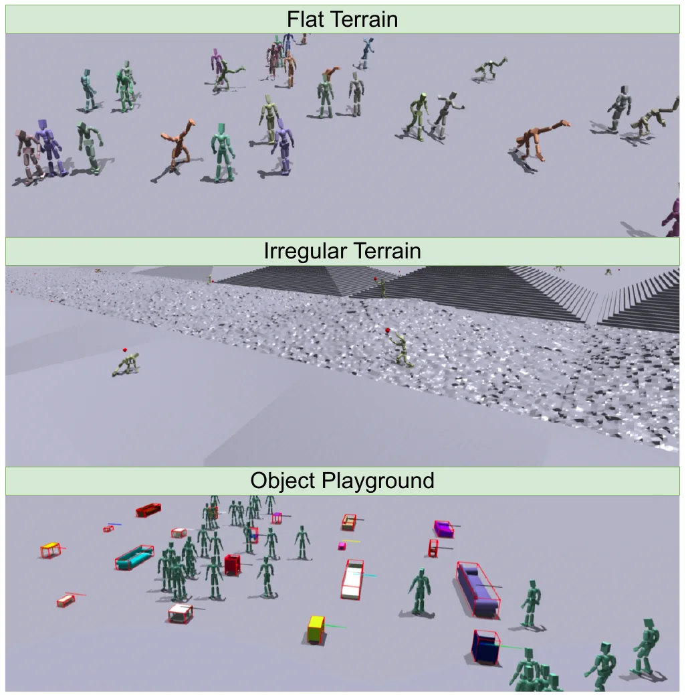
为了提高罕见和复杂动作的成功率，用早停：平地上任一关节偏离超过 0.25 m 就终止；起伏地形上放宽到 0.5 m，给控制器更多余地去改动原动作以适应新环境。另外优先训练失败率高的动作。有些动作本来就不可能在所有场景成功（比如在楼梯上前空翻、侧手翻），所以优先采样只统计平地上的失败。选中动作 \(m_i\) 的概率正比于它的失败概率，下限截到 \(3\times10^{-3}\)。这种自适应采样对收集足够的动态、困难动作数据很关键。
V1 代码 opt/mimic/early_termination_tracking_err.yaml：用最大关节误差，阈值 0.5，平地 0.25，评估时关闭早停，和正文一致。优先采样在 envs/mimic/common.py 里按“早停”分桶统计，最小权重取 \(\max(1/\text{桶数},\ \text{min\_bucket\_weight})\)，min_bucket_weight 默认 0（config/env/mimic.yaml）。我没有在 V1 代码里找到 \(3\times10^{-3}\) 这个数。另外 opt/mimic/dynamic_sampling.yaml 让 10% 回合从片段开头、10% 从随机位置出生（6ac71e1 里改成 15% 和 5%），论文没提。
\(\pi^{\rm FC}\) 训好后，用来训练通用的部分约束模型 \(\pi^{\rm PC}\)。给定部分约束（关节目标位置、文本指令、物体位置），MaskedMimic 生成满足约束的多样全身动作。\(\pi^{\rm PC}\) 学的是 \(\pi^{\rm FC}(a_t|g^{\rm full}_t,s_t)\) 给出的动作分布，但自己只看到 \(g^{\rm partial}_t\)。
考虑三类目标：
可以同时以多种目标为条件。比如“举着手跟着路径走”，就给根部的目标轨迹加上文本“walking while raising your hands”。训练用的灵活目标都是从动捕数据随机遮挡出来的，\(\pi^{\rm PC}\) 学着预测老师（看得到完整目标）的动作，从而还原原始的完整动作。
部分目标是欠定的：比如“1 秒内到达某个位置”，有很多动作都满足。所以 \(\pi^{\rm PC}\) 是条件变分自编码器（C-VAE），学满足约束的行为的分布，而不是单一确定的行为。
三个部件：可学习的先验 \(\rho\)、编码器 \(\mathcal E\)、解码器 \(\mathcal D\)。编码器 \(\mathcal E(z_t|s_t,g^{\rm full}_t)\) 看完整的未来目标，输出潜变量分布；解码器 \(\mathcal D(a_t|s_t,z_t)\) 以从编码器采的潜变量为条件输出动作；先验 \(\rho(z_t|s_t,g^{\rm partial}_t)\) 只看部分约束，学着匹配编码器的分布。先验是关键：运行时用户只给简单的部分约束，不用给完整轨迹。编码器只在训练时用。先验是对角高斯：
编码器写成先验的残差（借自 ControlVAE）：
这样，看得到完整目标的编码器的嵌入就不会离只看部分目标的先验太远。训练时潜变量从编码器采样。全部部件用同一个目标训练：最大化老师动作的对数似然，最小化编码器和先验之间的 KL：
\(g^{\rm partial}=\mathcal M(g^{\rm full})\)。\(\pi^{\rm PC}\) 和环境交互，\(\pi^{\rm FC}\) 给每一步标目标动作（DAgger）。推理时丢掉编码器，只从先验采潜变量。
把式 (6)(7) 代进对角高斯的 KL，逐维：
\(\mu^\rho\) 消掉了，KL 只惩罚偏移 \(\mu^{\mathcal E}\) 和两个方差的差别。V1 代码 agents/models/actor.py 的 kl_loss 在 residual_encoder 分支里正是 mu_posterior**2 / exp(logvar_prior) 这一形式。推论：KL 对 \(\mu^\rho\) 没有梯度，先验均值只能通过解码器的动作损失学习（\(z=\mu^\rho+\mu^{\mathcal E}+\sigma^{\mathcal E}\epsilon\)）。推理时 \(\epsilon=0\)、没有编码器，\(z=\mu^\rho\)，所以 \(\mu^\rho\) 本身得是一个能用的潜码，而 KL 逼着 \(\mu^{\mathcal E}\) 变小，正好把这个要求推到 \(\mu^\rho\) 上。论文只说残差的归纳偏置“确保先验正确地控制潜空间编码”，表 6 去掉它只剩 21.1%。这段推导是我加的。
另外代码里编码器的方差不是残差：get_vae_mu_logvar 先算 logvar_posterior − logvar_prior 再加回 logvar_prior，结果就是编码器自己的 logvar，和式 (7) 的 \(\sigma^{\mathcal E}\) 一致。
§6.5 说解码器输出确定性动作，式 (8) 却写 \(\log\mathcal D(a|s,z)\)。V1 代码 mimic_vae_dagger.py 的 bc_loss 是 square(new_mu − gt_actions).mean()，老师那边取的是均值动作 mus，不是采样。固定方差的高斯对数似然和均方误差只差常数和比例，所以两者相容；但“\(a\sim\pi^{\rm FC}\)”实际上是 \(a=\mu^{\rm FC}\)。KL 的权重 α 就是 §6.3 的 KL 系数。
四个提高稳定性和效果的策略：结构化遮挡、KL 日程、回合内固定噪声、观测历史。另外蒸馏时 \(\pi^{\rm FC}\) 和 \(\pi^{\rm PC}\) 都取确定性动作以减少数据采集的随机性；蒸馏时也用早停，避免 \(\pi^{\rm PC}\) 跑进 \(\pi^{\rm FC}\) 训练时没见过的状态（\(\pi^{\rm FC}\) 自己也带早停训练，在没经历过的区域可能给不出合适的动作）。
遮挡。随机去掉单个目标关节、文本描述和场景信息（若有）。为了时间上连贯，遮挡在时间上是结构化的：某一步抽到的遮挡有一定概率在接下来多步重复，而不是每步重新抽。作者观察到：每步重新抽会降低训练中的歧义——不同帧露出不同关节，跨帧合起来几乎就是完整描述——于是模型泛化更差。时间一致的采样保证某些关节连续多帧可见、另一些一直不可见。为了支持文本、物体这种高层目标，未来姿态可以全部遮掉。这样 \(\pi^{\rm PC}\) 在训练中见到各种遮挡模式，对用户输入更鲁棒。伪代码在附录 B.2。
KL 日程。类似 β-VAE，KL 系数从 0.0001 开始，线性增到 0.01。系数小时编码器-解码器能更贴近 \(\pi^{\rm FC}\)；增大后潜空间更有结构，运行时从先验采样更合适。
回合内固定噪声。潜变量用重参数化采样。为了更连贯，噪声 \(\epsilon\sim\mathcal N(0,1)\) 在整个回合内固定：回合 \(\tau\) 里 \(z^\tau_t=\epsilon^\tau\sigma^\tau_t+\mu^\tau_t\)。
| 参数 | 附录 B.2 | V1 env/masked_mimic.yaml 及选项 |
|---|---|---|
| 沿用上一步的遮挡 | 98% | masked_mimic_repeat_mask_probability 0.98 |
| 开始一段时间空档 | 1% | masked_mimic_time_gap_probability 0.1 |
| 空档长度 | 1–9 步 | 1 到 num_future_steps + 1 = 11 步 |
| 有长期条件时空档 | × 4 | with_conditioning_time_gap_mask_max_steps = 11 × 4 |
| 文本可见 | 20%（80% 遮掉） | 0.5（text_conditioning.yaml） |
| 物体可见 | 80%（20% 遮掉） | 0.8（samp_scenes.yaml） |
| 远期目标姿态 | 20% | target_pose_visible_prob 0 |
| 关节个数 | 90% 上限 6，10% 上限 3 | 同样，另加 force_max_conditioned_bodies_prob 0.1：10% 强制 6 个全可见 |
V1 发布的默认值有四处和附录不同。现在的 main 又不同（例如 visible_target_pose_prob 0.8）。我不知道论文实验用的是哪一组。
观测历史。以文本为条件时，给 \(\pi^{\rm PC}\) 过去的姿态对生成长而连贯、符合文本意图的动作很关键。仿照 SuperPADL，给先验从过去 40 步里抽出的 5 个观测。
关键帧。一个只露出部分关节的未来关键帧先按式 (3) 相对当前姿态归一，未观测的关节置零，再拼上遮挡标记和到目标帧的时间：\([\hat q_{t+\tau}*\text{mask}_{t+\tau},\ \text{mask}_{t+\tau},\ \tau]\)。过去时刻的姿态表示方式类似，但所有关节都可见、不遮。
物体。包围盒 8 个角的位置，换到角色局部坐标系，再加一个物体类别的索引（椅子、沙发、凳子……）。
文本。用 XCLIP 嵌入。XCLIP 在视频-语言对上训练，能更好地捕捉时间关系，适合描述动作。
为了统一处理多模态输入，先验 \(\mathcal R\)（即 \(\rho\)）是一个 Transformer 编码器，token 数可以随可观测目标变化。每种模态（目标姿态 \(\hat q_{t+\tau}\)、物体包围盒 \(o_t\)、地形高度图 \(h_t\)、当前姿态 \(s_t\)、文本 \(w_t\)、历史姿态 \(q_{t-\tau}\)）有自己的编码器，同模态的输入共享。被遮掉的输入用 Transformer 的掩码机制排除。输出经过两个全连接层得到先验的均值和 log 标准差。
编码器总是看完整目标帧，输入定长，所以是全连接网络。它看完整的未来姿态 \(\hat q_{t+\tau}\)、关键帧上的遮挡（告诉它先验看得到哪些关节）、当前姿态和高度图，两个全连接输出头给出残差均值和 log 标准差。解码器也是全连接网络，看当前状态 \(s_t\)、采到的潜变量 \(z_t\) 和高度图，输出确定性动作。
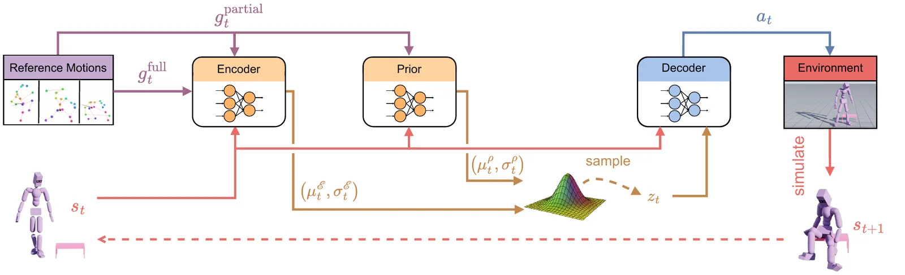
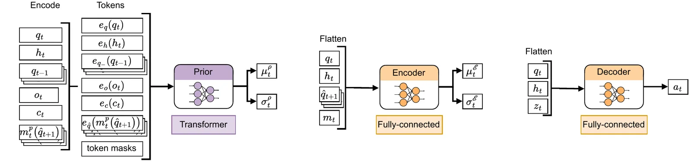
图 5b 的原图注说“未来姿态在编码前被遮挡，保证编码器只观测可条件的关节”。但 §6.5 和图 5b 本身都表明编码器看的是完整的未来姿态 \(\hat q_{t+1}\) 加遮挡标记 \(m_t\)，被遮挡的是先验的输入 \(e_{\hat q}(m^p_t(\hat q_{t+1}))\)。图注这里的“encoder”大概指 token 编码器 \(e_{\hat q}\)（属于先验），容易和 VAE 的编码器 \(\mathcal E\) 混淆。§6.5 还把先验写成 \(\mathcal R\)，其他地方都是 \(\rho\)。
自己画的 · 11 幕 3D 框架动画
整个框架拆成 11 幕：总览、跟踪器的输入、跟踪奖励、训练场和早停、A2C 与 PPO（当场算）、结构化遮挡（第 6 幕，当场按附录 B.2 抽样）、残差先验和 KL（当场算）、先验 Transformer 的 token、DAgger 蒸馏和 KL 日程、目标工程、结果表。可以暂停、拖进度、旋转画面、切换开关。玩具数字是当场算的，标明了哪些是玩具。
物理仿真全部用 Isaac Gym，16,384 个并行环境，分在 4 张 A100 上。训练约两周，\(\pi^{\rm FC}\) 约 300 亿步，\(\pi^{\rm PC}\) 约 100 亿步。控制器 30 Hz，仿真 120 Hz。训练 \(\pi^{\rm PC}\) 时，可条件的关节是一组关键部位：左踝、右踝、骨盆、头、左手、右手。
§7 说“训练约两周”，附录 B.1 说“共 14 天”，没说两个阶段各两周还是合计两周。按各两周算，\(\pi^{\rm FC}\)：\(3\times10^{10}/(14\times86400\ \text{s})\approx24{,}800\) 步/秒，每个环境约 1.5 步/秒；\(\pi^{\rm PC}\)：约 8,300 步/秒（还要跑冻结的老师和 Transformer 先验，慢一些说得通）。如果合计两周，总吞吐约 33,000 步/秒。
按 epoch：每轮 16384 × 32 = 524,288 步，\(\pi^{\rm FC}\) 约 57,220 轮，\(\pi^{\rm PC}\) 约 19,073 轮。V1 代码 base.yaml 的 training_max_steps 默认正好是 10¹⁰，max_epochs = 10¹⁰ // 4 卡 // 4096 // 32 = 19,073，和 \(\pi^{\rm PC}\) 对得上；\(\pi^{\rm FC}\) 要自己改成 3×10¹⁰。
训练数据是几种数据集的合集，分别提供不同模态。
关键帧条件。核心是 AMASS（论文），各种人类动作的动捕，没有场景和文本。从中取关节位置、旋转和相对时间，用于任意关节任意时刻的条件。为了泛化，左右镜像做数据增强。AMASS 里有些动作有严重问题（肢体互穿、漂浮、没有物体的场景交互，比如走一段不存在的楼梯），按 PHC 的方式过滤。
文本条件。HumanML3D（论文）把 AMASS 的序列拆成带文本描述的原子行为。镜像的动作配镜像的文本，比如“a person turns left”改成“turns right”。
场景交互。SAMP（论文）有和各类物体交互的动作片段，以及对应的物体网格。为了能和更多物体交互，在每个片段对应的物体类别里随机换物体（照 InterPhys 的做法），比如用多种扶手椅训练同一个坐下动作，运行时就能以不同的物体为条件。
用以前系统提出的常见任务组成基准，每个任务报一个成功率和一个误差。评测时 MaskedMimic 取先验分布的均值作潜码；随机采样潜码会更多样，但也更可能取到不太可能、容易失败的解，原始跟踪指标会稍差。所有评测都用同一个统一模型，不针对任务微调；定性结果来自新的用户目标或训练时没见过的动作。
全身跟踪。\(\pi^{\rm FC}\) 和 \(\pi^{\rm PC}\) 都评。目标动作的所有特征都可见，这是动作生成能力的基线，也能和以前的跟踪系统比。
关节稀疏。先评 VR 跟踪：只给头的位置和旋转、双手位置（QuestSim 的设定）。MaskedMimic 没有专门为 VR 训练。对比 Luo et al. 2024（PULSE 论文）报告的三个基线：PULSE、ASE、CALM。此外利用任意关节条件，评测给不同关节组合时的跟踪。
起伏地形。在随机生成的起伏地形（碎石、台阶、光滑和粗糙的坡）上评测 \(\pi^{\rm FC}\) 和 \(\pi^{\rm PC}\) 的全身模仿和 VR 跟踪，目标仍来自 AMASS。
为了指挥模型做新任务，构造简单的有限状态机，在不同目标之间切换。四个任务：
表 1、2、4 是跟踪任务的统计，图 6 是例子。给全身目标时，MaskedMimic 能跟住空手道和舞蹈的完整动作，手脚位置都对得上；只给部分目标时，比如只用 VR 稀疏信号，它能在起伏地形上复现侧手翻，或者跟着头的目标轨迹跑。
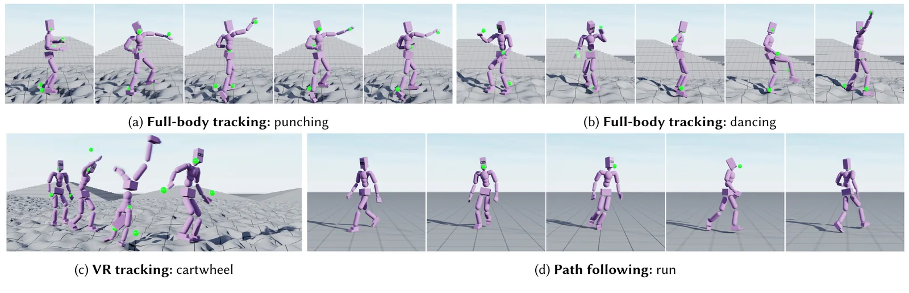
全身跟踪。在 AMASS 训练和测试划分上评测。任一帧平均关节偏差超过 0.5 m 就算失败。MPJPE 是平均每关节位置误差（毫米，全局坐标）。
表 1 · 全身跟踪，平地（照录原文。原文图注说加粗的是测试集最好的模型）
| 方法 | 训练 | 测试 | ||
|---|---|---|---|---|
| Success | MPJPE | Success | MPJPE | |
| FC（本文） | 99.96% | 30.4 | 99.9% | 31.3 |
| PHC+ | 100% | 26.6 | 99.2% | 36.1 |
| MaskedMimic（本文） | 99.4% | 32.9 | 99.2% | 35.1 |
| PULSE | 99.8% | 39.2 | 97.1% | 54.1 |
\(\pi^{\rm FC}\) 超过 PHC+，论文说在没见过的动作上把失败率降低 62.5%，同时支持更多动作、起伏地形和物体交互。作者把提升归因于结构和数据增强。一个关键区别是用一个统一网络，而 PHC 用专家混合（MoE）。MoE 在全约束跟踪上用过（每任务一个控制器，或渐进增长的多跟踪器混合），但动作种类一多，在在线蒸馏（DAgger）里维护多个专家很难，PHC 的 MoE 还需要额外的门控网络按目标动作选择和混合专家。实验说明一个单体网络泛化更好，也省去了专家选择和混合的复杂性。
和 PULSE 比，PULSE 对训练数据过拟合更明显，MaskedMimic 在测试集上泛化更好。作者给两个原因：MaskedMimic 的老师泛化更好，这一点可能传给学生；MaskedMimic 要处理多任务、多场景，这种训练可能本身带来更好的泛化。
按表 1 测试集：PHC+ 失败 0.8%，FC 失败 0.1%，降低 \((0.8-0.1)/0.8=87.5\%\)。要得到 62.5%，FC 测试应是 99.7%（\((0.8-0.3)/0.8\)），或者 PHC+ 是 99.73%。表和正文有一处对不上，我判断不了是哪个数写错了。另外两边的测试集可能不同（读者注 13），这个百分比本身也不太有意义。
表 1、表 2 里 PHC+、PULSE、ASE、CALM 的数字和 PULSE 论文表 1、表 2 完全一样，是照搬的；PULSE 的 AMASS-Test* 是 138 条。但 MaskedMimic 这边的测试成功率——99.9、99.2、99.1、98.4、98.1、97.9、93.4、91.8、98.2、95.4、93.6——一个也不能写成 k/138（四舍五入或截断都试过，只有 99.2 和 93.4 碰巧可以，因为 PULSE 也有这两个数），却全部能写成 k/1776（比如 99.9% = 1775/1776 截断，99.1% = 1761/1776 截断，91.8% = 1631/1776 截断）。
V1 代码 data/yaml_files/amass_test.yaml 正好是 1776 条动作，每条带 HumanML3D 的 id 和文本标签，也就是 HumanML3D 的测试划分；amass_train.yaml 8327 条，镜像版 16654 条。所以我推测 MaskedMimic 的“测试集”是这 1776 条，和 PULSE 的 138 条不同。论文正文只说“AMASS 训练和测试划分”、“按 PHC 过滤”，没说条数。如果属实，表 1、表 2 的横向比较（包括“PULSE 过拟合更严重”的说法）需要打折扣。这是推测，未核实。
VR 跟踪。在头和双手三个传感器上报成功率，此外报未观测的全身 MPJPE 和观测关节的误差 MPOJPE（mean per observed joint position error）。PULSE、ASE、CALM 都是先训可复用的低层控制器，再为这个任务训新的高层控制器；MaskedMimic 直接用，不做任何额外训练，在测试集上明显领先。
表 2 · VR 跟踪，平地（照录原文。原文图注补充：MaskedMimic 的 MPOJPE 训练 39.5、测试 45.8）
| 方法 | 训练 | 测试 | ||
|---|---|---|---|---|
| Success | MPJPE | Success | MPJPE | |
| MaskedMimic（本文） | 98.6% | 50 | 98.1% | 58.1 |
| PULSE | 99.5% | 57.8 | 93.4% | 88.6 |
| ASE | 79.8% | 103 | 37.6% | 120.5 |
| CALM | 16.6% | 130.7 | 10.1% | 122.4 |
关节稀疏。表 3 是改变可条件关节时的结果，难度有层次：脚比手难；骨盆比头和双手容易。作者觉得最后一点很有意思：VR 全身重建对游戏和协作很重要，结果提示加一个骨盆传感器（或用头戴设备预测骨盆位置）可能明显改善还原效果。
表 3 · MaskedMimic，关节稀疏，平地（照录原文）
| 给定关节 | 训练 | 测试 | ||
|---|---|---|---|---|
| Success | MPOJPE | Success | MPOJPE | |
| 全身 | 99.4% | 32.9 | 99.1% | 35.1 |
| 骨盆 | 98.4% | 31.4 | 98.4% | 33.4 |
| VR（头 + 双手） | 98.6% | 39.5 | 98.1% | 45.8 |
| 头 | 97.7% | 42.6 | 97.9% | 45.6 |
| 双手 | 95.2% | 60.2 | 93.4% | 69.6 |
| 双脚 | 92.7% | 88 | 91.8% | 94.3 |
起伏地形。以前的大多数模型没有训练物体和起伏地形，所以这里只比较全身跟踪器和 MaskedMimic。表 4 显示 MaskedMimic 在训练集和测试集上的成功率和误差接近。
表 4 · 起伏地形上跟踪 AMASS 动作（照录原文；FC 不能做 VR，原文空着）
| 模型 | 划分 | 全身 | VR | ||
|---|---|---|---|---|---|
| Success | MPJPE | Success | MPOJPE | ||
| FC | 训练 | 98% | 51.5 | – | – |
| 测试 | 98.2% | 51 | – | – | |
| MaskedMimic | 训练 | 94.7% | 61.3 | 94.4% | 62.7 |
| 测试 | 95.4% | 62.9 | 93.6% | 69.4 | |
和平地比（表 1），起伏地形上 MaskedMimic 的全身成功率从 99.2% 降到 95.4%，误差从 35.1 升到 62.9 mm；FC 从 99.9% 降到 98.2%。蒸馏在地形上损失更大（FC 与 MaskedMimic 差 2.8 个点，平地只差 0.7）。这两句是我从表里读的，论文没有这样比。
用“目标工程”解任务，类似语言模型的提示词工程。每个任务构造一个简单的有限状态机，每一步根据当前状态决定给 MaskedMimic 哪些目标。比如坐椅子：先用插帧（任意关节任意时刻约束）走向椅子，到范围内后改为以椅子包围盒为条件。每个任务报 5000 个随机回合的平均。
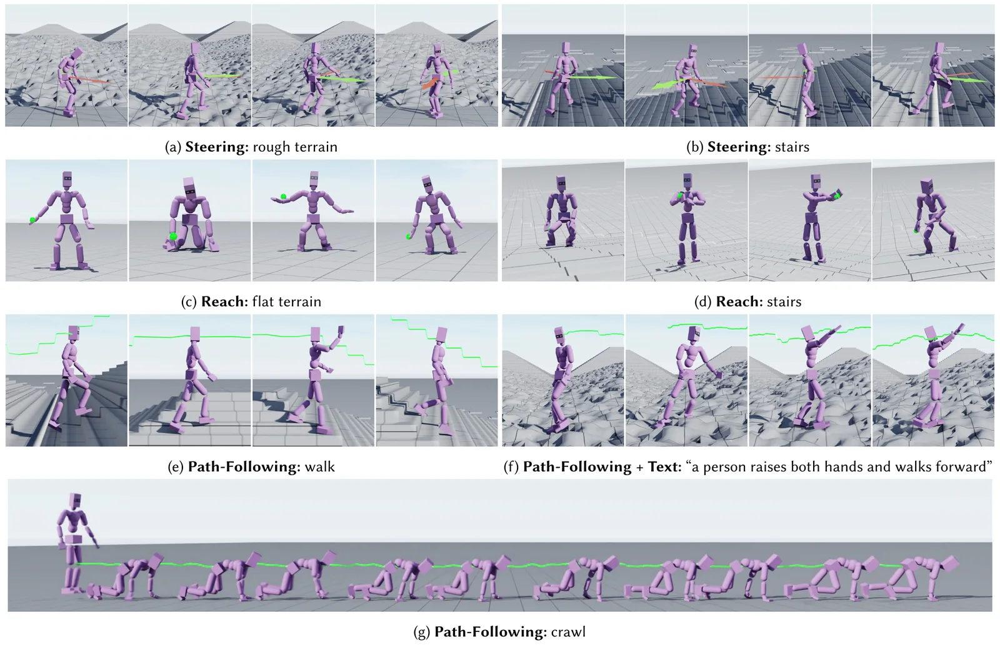
转向任务里，给目标移动和朝向方向，就得到一个类似摇杆的控制器。给手的目标位置，模型产生各种够取动作，比如伸手、弯腰。给头的目标位置和朝向，MaskedMimic 跟住路径并满足高度约束，于是可以上下楼梯、在平地上爬。文本还能给动作加风格：图 7f 是头跟路径、文本指定身体其余部分的风格。
表 5 · 任务（照录原文。“Locomotion”即路径跟随）
| 任务 | 地形 | Success | Error |
|---|---|---|---|
| 路径跟随 | 平地 | 96.3% | 11.2 cm |
| 起伏 | 96.3% | 12.5 cm | |
| 转向 | 平地 | 97.8% | 8.4 cm/s |
| 起伏 | 93.8% | 8.4 cm/s | |
| 伸手 | 平地 | 88.7% | 20.3 cm |
| 起伏 | 87.3% | 21.7 cm |
路径跟随。任一时刻离目标位置超过 2 m 就算失败，误差报 3D 位置的平均偏差。先按相邻路点的方向算出每步的目标旋转。每一步给 MaskedMimic 接下来 5 步的目标位置和旋转，外加 0.8 秒后的一个目标，用于长一点的规划。离目标超过 0.4 m 时，只给 0.8 秒那个远处目标，让模型在怎样回到路径上有更多自由。作者观察到用户控制和成功率之间有取舍：近期目标约束得越松，成功率越高、误差越小，但用户的控制越少。
转向。给两个向量，分别是要求的朝向和移动。角色要按移动向量的方向和速度移动，同时朝向朝向向量。朝向偏差超过 45° 算失败，误差报沿目标方向的速度误差（cm/s）。向量每变一次，有 2 秒缓冲才开始计分。做法是任意关节控制，条件放在骨盆的旋转和位置上：先给目标旋转和距开始计分的剩余时间 \((\hat\theta^{\rm root},\tau-t)\)，再给 1 秒后的根部旋转和偏移 \((\hat\theta^{\rm root},\hat p^{\rm root},1\,\text{s})\)，其中 \(\hat p^{\rm root}=[p^{\rm root}_x+v_x,\ p^{\rm root}_y+v_y,\ 0.9]\)，高度 0.9 m 保证角色直立。
伸手。这是插帧问题：目标位置变后有 2 秒到达，中间的动作完全不指定。到时手偏离超过 0.5 m 算失败，误差报手应停留期间的平均距离。只以右手目标位置为条件，外加到达剩余时间，剩余时间最多截到 1/6 秒。作者发现如果目标设在紧接着的几帧，失去平衡时不容易恢复；把目标设得更远给模型更多自由，动作更真实、更稳。
原文先说剩余时间“最多截到 1/6 秒”，接着又说把目标设得更远效果更好，两句的方向不太一致。V1 代码 envs/masked_mimic/tasks/reach/common.py 用的是 (到达步数 − 当前步 − 10).clamp(min=3)：目标时刻比真实到达时刻提前 10 步（1/3 秒），最少 3 步（0.1 秒），并不是“最多 1/6 秒”。1/6 秒等于 5 步，我猜原文可能想写的是别的量，未核实。
前面的任务都只用任意关节约束。这个任务里角色在离物体较远的随机位置出生，要走过去坐下，需要组合三种模态。离物体超过 2 m 时，用任意关节控制：朝物体方向、速度 1 m/s 的目标方向，同时给文本“the person walks normally”，让它稳而自然地走过去。进入 2 m 后撤掉方向和文本，改为以物体包围盒为条件，模型就生成交互动作（比如坐下）。SAMP 的物体交互片段本来就是“走向物体再坐下”，所以只给物体表示就够了。
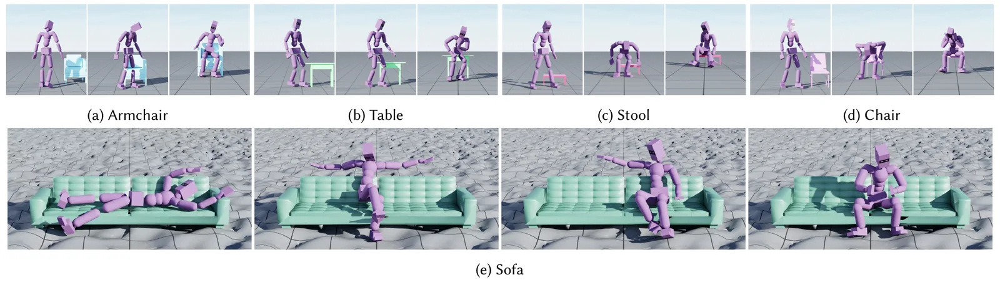
图 8 里的物体都来自测试集。图 8a–d 是接近不同形状和大小物体的各种动作；图 8e 把沙发放在粗糙地形上，这种组合训练时没有，MaskedMimic 仍能走过去坐下或躺下。VAE 结构让它对同一个物体产生多种解，坐的位置和姿势各不相同。
物体交互要组合多种模态、精确感知场景，所以也用作消融。成功定义为回合中坐上物体（骨盆到有效坐位 20 cm 以内），误差报骨盆到物体的平均最小距离。
表 6 · 物体交互与消融（照录原文）
| 模型 | Success | Error [cm] |
|---|---|---|
| MaskedMimic（本文） | 96.9% | 10.5 |
| 无历史 | 94.9% | 12.7 |
| 无 VAE | 93.2% | 12.2 |
| 无残差先验 | 21.1% | 57.4 |
| 无结构化遮挡 | 0% | 274.4 |
结论四条：(1) 动作通常从站立开始，给历史姿态后不容易卡在原地；(2) VAE 结构更好地编码了解的多样性，控制器更稳；(3) 残差结构的归纳偏置保证先验正确地控制潜空间，非残差的先验根本控制不了动作；(4) 结构化遮挡至关重要，它保证模型见到重复的关节，有时只见到高层指令。
四个消融都只在坐椅子这一个任务上报，而且这个任务依赖物体条件和长时间空档（远处走向椅子）。“无结构化遮挡”0%、误差 274.4 cm（比出生距离 2–10 m 的下限还大），说明模型根本没走到椅子边，不是“坐得不好”。这些数字能说明结构化遮挡对“只给高层条件”的场景是必要的，但不能直接推到全身跟踪或 VR 这类有密集关节约束的任务上；论文没有在表 1–5 的任务上做消融。“无 VAE”只差 3.7 个点，说明 VAE 带来的主要是多样性（图 8e），不是成功率。
图 9 是只用文本控制的例子，都从中立站姿开始。对踢腿、敬礼这类简单原子行为效果不错，但需要长程推理的指令就不行，比如“走 4 步再举手”。作者猜是因为观测里的历史太短，限制了长程推理。
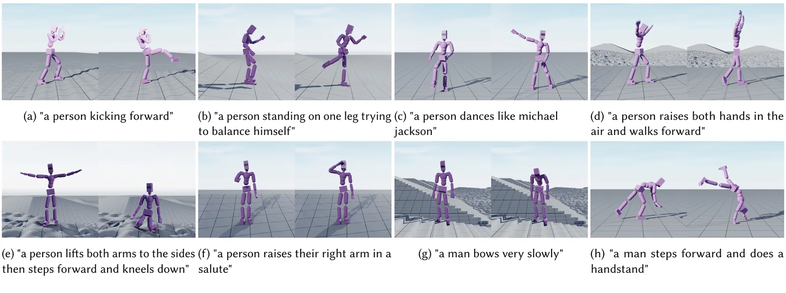
动作质量。三点：一些动作有不自然的抖动，可以用判别器奖励（AMP）微调来抑制；控制器没能完美复现整个训练集，后空翻、霹雳舞这类难动作仍做不出来；在起伏地形上角色倾向于照搬平地走路，而不是规划更合适的落脚点，缺少人类那种长程规划。作者认为原因是从平地到起伏地形的映射太简单（只按根到地面的距离归一），未来可以收集带场景的动作或改进重定向。
目标工程。能用目标工程做很多以前要专门训练的任务，但要在复杂场景里控制一大群角色（比如人群）自然地动，设计目标会很费力。作者想用大语言模型自动化目标工程。
新能力。从静态场景走向动态场景：操纵物体、搬东西、用工具；以及多角色交互。
MaskedMimic 把物理角色控制统一成从部分信息补全动作。它在大量随机遮挡的多模态动作片段（关节目标、文本、物体）上训练，被迫学会连贯而多样地补全缺失信息，于是不用手工给出完整目标就能满足各种约束。论文展示的摇杆转向、伸手、VR 跟踪、全身跟踪、路径跟随、物体交互、文本到动作，都由一个统一的结构完成，不需要任务专门的训练或奖励工程。关键在于：学会从部分描述生成动作，模型就获得了一种通用的、可以被引导到各种目标的“怎样动”的理解。
人形基于中性体形的 SMPL，69 个自由度，和 UHC、PACER、PHC 用的类似。状态表示照 AMP：根（骨盆）高度；根在角色局部坐标系里的旋转；各关节的局部旋转；各关节的局部速度；手和脚在局部坐标系里的位置。局部坐标系原点在根部，x 轴沿根的朝向，y 轴对齐全局向上方向。每个关节的 3D 旋转用两个 3D 向量编码：该连杆局部坐标系的切向 u 和法向 v，在父连杆坐标系中表示。合计 358 维。
动作是各关节 PD 控制器的目标旋转。和 PADL、ASE、AMP、CALM 一样，球关节的目标旋转用 3D 指数映射表示，合计 69 维（23 个关节 × 3）。
358 和 PHC 代码算出的本体维数相同（PHC 页读者注 2：\(1+24\times15-3\)）。但两种写法的拆法不同：附录 A 列的是 AMP 风格（根高、根旋转、关节局部旋转、局部速度、手脚位置），式 (3) 写的是 PHC 风格（相对根的旋转、位置、速度）。两种都能凑出 358，论文没有说是哪一种，我没有在 V1 代码里逐项核对每一维的来源，未核实。
任意关节任意时刻约束。一个身体部位可以约束位置，也可以约束旋转，任意关节、任意时刻都行。每个约束用 12 维向量表示：相对人形当前局部坐标系 6 维，相对对应身体部位 6 维。例如左手的空间约束是 \([p^{\rm left\,hand}_\tau-\hat p^{\rm left\,hand}_t,\ p^{\rm left\,hand}_\tau-\hat p^{\rm root}_t]\)。位置约束从 3 维补零到 6 维，旋转约束本来就是 6 维。某个目标姿态一个约束都没有时，把它整个从 Transformer 里遮掉。
目标物体。包围盒（8 个坐标，各 3 维）、朝向（6 维）、类别（1 维），坐标和朝向都在角色局部坐标系里。
文本。XCLIP 把每句话嵌成 512 维。
历史姿态。存过去 40 个姿态，每 8 个取 1 个提供给模型，和 SuperPADL 类似。每个姿态相对角色当前局部坐标系表示，并附一个时间，表示多久以前。回合开头没有历史时遮掉不存在的历史；从片段中间初始化时用运动学的历史姿态填。
高度图。16 × 16 个点的方形网格，随角色旋转，间距 10 cm。摊平后用全连接编码器编码，和当前状态一样总是提供。
结构。图 10 是先验的结构。每种观测用该类型共享的编码器编码，比如所有历史姿态共用一个编码器，得到 5 个 token；文本用另一个编码器。编码前每种输入都用滑动均值-标准差归一化。每个编码器是隐藏层 [256, 256] 的全连接网络。Transformer 隐维 512，前馈 1024，4 层，4 个自注意力头，不用 dropout。所有 token 和当前姿态的编码一起送进 Transformer，取第一个输出，经过两个 MLP 头（512 → 256 → 128 → 64）得到 \(\mathcal N(\mu,\sigma)\)。训练和推理时整个回合用同一个噪声：
回合结束时重新抽 \(\epsilon\)。
编码器是 MLP，隐藏层 [1024, 1024, 1024]，输入是当前姿态、高度图、未遮挡的未来姿态和未来姿态的遮挡标记。主网络输出 1024 维，再经隐藏层 512 的 MLP 映射到后验的均值和方差。解码器看当前姿态、地形和采到的 z，是 [1024, 1024, 1024] 的全连接网络，输出 PD 目标。完整结构见图 5a。
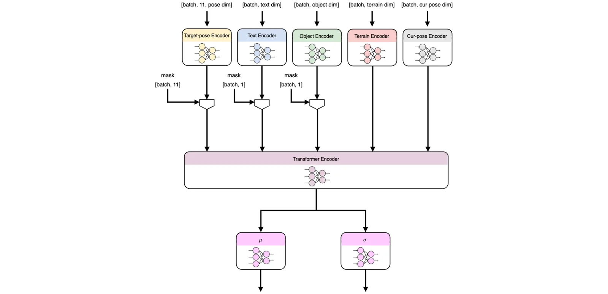
每个回合从优先采样决定的分布里随机抽起始状态，并抽一个噪声，回合重置前一直不变，用于潜变量的重参数化。回合内智能体每次交互 32 步，然后用 A2C 训练，\(\gamma=0.99\)，GAE \(\tau=0.95\)。演员学习率固定 2e-5，评论家 1e-4。Adam，betas [0.9, 0.999]。激活函数 ReLU，观测用滑动均值-标准差归一化。奖励参数：
MaskedMimic 的 KL 系数从 0.0001 增到 0.01，从第 3000 个 epoch 开始，持续 6000 个 epoch。16,384 个 Isaac Gym 环境，4 张 A100，共 14 天。策略 30 Hz，潜空间 64 维。
训练全身跟踪器时每卡小批 16,384；作者发现 A2C 更稳定、最终表现更好，为保证在策略，在整轮数据上累积梯度。MaskedMimic 用 8,192 的小批，一遍数据，监督行为克隆目标；因为是监督学习，不做梯度累积，允许更多梯度步。
“从 3000 开始、持续 6000 个 epoch”意味着第 9000 个 epoch 到顶。V1 algo/mimic_vae.yaml 写的是 start_epoch 3000、end_epoch 6000，单看名字像是“3000 到 6000”；但 agents/mimic_vae.py 的公式是 min(max(0, epoch − start_epoch) / end_epoch, 1)，end_epoch 实际上是持续长度，所以代码和附录一致，都是 3000 → 9000。按读者注 11 的 19,073 个 epoch，到顶时约训练了 47%。
但 V1 发布版里，这段代码的判断条件是 self.config.get("vae_kld_schedule", None)，而日程放在配置的 vae.vae_kld_schedule 下面，algo.config 顶层没有这个键。按字面，条件永远不成立，KL 项不会被加进损失，先验和编码器之间没有任何约束。两天后的提交 6ac71e1（2024-09-27，“Fixing incorrect config fields”）把它改成 self.config.vae.vae_kld_schedule。我是读源码得出的，没有运行验证。论文结果显然不是用发布版这一行训出来的；用 2024-09-25 到 09-27 之间的代码复现的人会得到一个没有 KL 的模型。
另外附录说 MaskedMimic 用 8,192 的小批；V1 配置没有为 MaskedMimic 改 batch_size（仍是 ppo.yaml 的 16384），mimic_vae_dagger 的 training_step 也沿用 gradient_accumulation_steps 的逻辑（默认 1，即不累积），后者和附录一致。
模型用 \(K=11\) 个未来姿态训练：前 10 个是近期约束（紧接着的 10 帧），第 11 个留给随机的远期姿态。
前 10 个里，每个姿态的稀疏模式取决于它前一个：98% 的概率沿用，2% 的概率重新抽一组可见关节和约束类型（位置或旋转）。另外以 1% 的概率抽一段时间空档，长度在 1 到 9 之间（含两端）；空档里的姿态全部遮掉，这样模型会遇到插帧问题，但保证至少有一个可见的未来姿态。有远期约束（远期目标姿态、文本或目标物体）时，抽到的空档长度乘 4，让模型有一段时间完全没有近期约束地生成动作。每个回合里，有物体时 20% 的概率把它遮掉；文本 80% 的概率遮掉；远期目标姿态 20% 的概率提供。
清单 1 的逻辑（用我的话转述，不是原文代码）
按清单的规则可以算出重新抽时的关节个数分布：上限 6 时 round(U × 5 + 1) 给出 1 和 6 各 10%、2 到 5 各 20%；上限 3 时 1、3 各 25%、2 为 50%。合起来 P(1) = 0.115、P(2) = 0.23、P(3) = 0.205、P(4) = 0.18、P(5) = 0.18、P(6) = 0.09，期望 3.35 个关节；每个关节给位置的概率 2/3、给旋转的概率 2/3、两者都给 1/3。第 6 幕按这个规则抽了 40 段 × 300 步：平均可见 3.30 个关节、全遮 5.1%、同一遮挡平均持续 23 步（被空档和重抽打断，比单看 98% 的 50 步短）。
清单和 V1 代码有一处出入：代码在第 4 步之后还有 force_max_conditioned_bodies_prob = 0.1，把 10% 的环境强制设为 6 个全可见，清单里没有。清单里“重复”的条件写 remaining_time < 0，“开始空档”写 ≤ 0，计数正好为 0 的那一步两者都不触发，会直接重新抽；这是实现细节，不影响结论。
完整的逐项对照在动画页的结构表里。这里只列和论文不一致、可能影响复现的地方：
| 项目 | 论文 | V1 代码（bacad32） | 注 |
|---|---|---|---|
| 跟踪器算法 | A2C，整轮累积 | PPO，6 遍 × 8 小批 | 2 |
| KL 项 | 10⁻⁴ → 10⁻² | 发布版读错配置键，不加；6ac71e1 修正 | 19 |
| 遮挡 | 空档 1%、1–9 步；文本可见 20%；远期目标 20% | 空档 0.1、1–11 步；文本 0.5；远期目标 0；10% 强制全可见 | 9 |
| 历史 | 40 帧取 5 | 120 帧取 15 | 18 |
| 物体 | 31 维 | 37 维（类别独热） | 18 |
| 优先采样下限 | 3×10⁻³ | max(1/桶数, 0) | 6 |
| 测试集 | 未写条数 | amass_test.yaml 1776 条 | 13 |
ProtoMotions 现在的 main（b43fc6f）已经是一个通用框架，MaskedMimic 只是其中一个示例（examples/experiments/masked_mimic/transformer.py）。它的默认值又和论文、V1 都不同：未来目标 5 帧，KL 日程 start_epoch 500、end_epoch 2000，visible_target_pose_prob 0.8；PPO 的 num_mini_epochs 默认 1（base_agent/config.py）。许可也从 V1 的 NVIDIA License（非商业）变成了 Apache 2.0。要复现论文，现在的 main 不是合适的起点；要读论文时的代码，只能找 2024 年 9 月的分叉。
以下各条都是本页加的核算或对照，不属于论文内容。点编号跳到对应位置。标★的是对 SuperMimic 的核对。
论文没写、我也没找到的：测试集的条数（只能从成功率反推）；奖励各项的完整形式（只在代码里）；\(\pi^{\rm FC}\) 的网络尺寸和 K（只在代码里）；表 5 各任务 5000 回合的地形生成参数；坐椅子测试物体的数量。
文中提到的数据集、仿真器和方法。arXiv 编号在 2026 年 11 月 9 日用脚本按标题核对过。
| 名称 | 是什么 | 主页 | 论文 |
|---|---|---|---|
| MaskedMimic | 本文 | ProtoMotions | 2409.14393 |
| AMASS | 动捕合集，关键帧条件 | amass.is.tue.mpg.de | 1904.03278 |
| HumanML3D | AMASS 的文本标注 | github.com/EricGuo5513/HumanML3D | CVPR 2022 |
| SAMP | 人-物交互动作和物体网格 | samp.is.tue.mpg.de | 2108.08284 |
| BABEL | 动作文本标注，相关工作 | babel.is.tue.mpg.de | 2106.09696 |
| SMPL | 人体模型 | smpl.is.tue.mpg.de | Loper 等，TOG 2015 |
| Isaac Gym | GPU 物理仿真器 | developer.nvidia.com/isaac-gym | 2108.10470 |
| XCLIP | 视频-语言文本嵌入 | github.com/microsoft/VideoX | 2208.02816 |
| DAgger | 在线模仿学习 | – | 1011.0686 |
| A3C / A2C | 附录 B.1 引用的 RL 算法 | – | 1602.01783 |
| GAE | 优势估计 | – | 1506.02438 |
| DeepMimic | 跟踪的基础，站内精读 | – | 1804.02717 |
| PHC | 数据过滤来源，站内精读 | 代码 | 2305.06456 |
| PULSE / PHC+ | 表 1、表 2 基线，站内精读 | 代码 | 2310.04582 |
| ASE | 表 2 基线 | 代码 | 2205.01906 |
| CALM | 表 2 基线 | – | 2305.02195 |
| ControlVAE | 残差先验的来源，站内精读 | – | 2210.06063 |
| AMP | 状态表示的来源 | – | 2104.02180 |
| PADL | 文本条件物理控制 | – | 2301.13868 |
| SuperPADL | 历史观测的做法 | – | 2407.10481 |
| InterPhys | 坐椅子、换物体的做法 | – | 2302.00883 |
| PACER | 地形行走 | – | 2304.01893 |
| PACER+ | 运动学上半身 + 物理路径 | – | 2404.19722 |
| QuestSim | VR 跟踪设定 | – | 2209.09391 |
| QuestEnvSim | 固定稀疏模式的物理跟踪 | – | 2306.05666 |
| PhysHOI | 物理人-物交互 | – | 2312.04393 |
| MDM | 运动学文本到动作 | 代码 | 2209.14916 |
| OmniControl | 运动学任意关节控制 | – | 2310.08580 |
| UniCon | 全身跟踪，引言引用 | – | 2011.15119 |